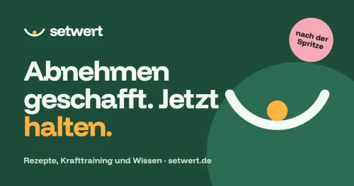

Setwert-Halteplan: Gewicht halten nach dem Abnehmen (40 % Provision)
Produktprofil · Marktplatz-Daten 2026-10-14 · Verkaufsseiten-Recherche 2026-10-14 · Kategorien: Health & Fitness, Food & Drink
- Setwert-Halteplan: Gewicht halten nach dem Abnehmen (40 % Provision) ist ein/e Mitgliederbereich & Videokurs in Health & Fitness und Food & Drink, vertrieben über den Digistore24-Marktplatz von Anbieter setwert, gelistet seit 2026-10-02.
- Listenpreis $98.72 (single payment, installment) — Checkout, Auslieferung und Rückerstattungen laufen über Digistore24 selbst, nicht über den Anbieter.
- Käuferschutz: keine standardisierte Garantie-Formulierung gefunden — Rückerstattungsbedingungen vor der Zahlung auf der offiziellen Seite prüfen.
Interesse an Setwert-Halteplan: Gewicht halten nach dem Abnehmen (40 % Provision)? Aktueller Preis, Boni und Garantiebedingungen finden Sie auf der offiziellen Seite des Anbieters:
Offizielle Verkaufsseite ansehen
Affiliate-Link (Werbung) — wir verdienen ggf. eine Provision, ohne Mehrkosten für Sie.

Marktplatz-Daten
| Produkttyp | Mitgliederbereich & Videokurs |
|---|---|
| Preis | $98.72 (Single payment, Installment) |
| Garantie/Rückgabe | Laut Verkaufsseite des Anbieters — vor dem Kauf auf der offiziellen Seite prüfen |
| Anbieter | setwert (gelistet seit 2026-10-02) |
Marktplatz-Beschreibung des Anbieters
Das Schwierigste am Abnehmen kommt danach: das Gewicht halten. Der Setwert-Halteplan ist ein 12-Wochen-Selbstlernprogramm genau für diese Phase. Was drin ist: 12 Wochen, jede Woche eine kurze Lektion, ein Menü mit Einkaufsliste und ein Training für zuhause 32 eiweißreiche Rezepte mit Fotos Halte-Zone, Wochenschnitt und Fortschritt direkt in der App Web-App für Handy und PC, kein Download nötig Preis: 99 € einmalig, kein Abo. Provision: 40 %. Zielgruppe: Menschen im deutschsprachigen Raum, die abgenommen haben (mit Diät, Sport oder nach einer Abnehmspritze) und ihr Gewicht jetzt halten wollen. Passt zu Blogs, Pinterest, Instagram und Newslettern rund um Abnehmen, Ernährung, Rezepte und Fitness. Werbemittel (Pins, App-Bilder, Texte zum Kopieren): https://setwert.de/partner/ Kostenloser Einstieg für deine Leser: der Halte-Check auf setwert.de rechnet Kalorien- und Eiweißbedarf nach dem Abnehmen aus. Wichtig: Keine Werbung für Abnehmspritzen oder Medikamente, keine Heilversprechen, kein Coaching versprechen (Selbstlernprogramm ohne persönliche Betreuung), kein Spam, keine Suchanzeigen auf den Markennamen «Setwert».
Von der Verkaufsseite des Anbieters
Seitentitel: Der Setwert-Halteplan: 12 Wochen Gewicht halten | Setwert
Meta-Beschreibung: Abgenommen, auch mit der Abnehmspritze? Der Halteplan begleitet dich 12 Wochen mit Lektionen, 32 Rezepten, Einkaufslisten und Training. Als App auf dem Handy.
Hauptüberschrift
Abnehmen geschafft. Jetzt halten.
Abschnitts-Überschriften
- Die schwierigste Zeit kommt danach.
- Das bekommst du
- Ein Blick in Woche 1
- So funktioniert es
- Die 12 Wochen
- Für dich, wenn
- Nicht für dich, wenn
- Bereit für die Zeit danach?
- Erst mal reinschnuppern?
Einstiegstext
Der Setwert-Halteplan: 12 Wochen, die dir helfen, dein Gewicht zu halten. Mit echtem Essen, Krafttraining und einem klaren Plan. Direkt auf deinem Handy.
Der Halteplan startet in Kürze. Trag dich unten für den Gratis-Kurs ein, dann erfährst du es zuerst.
Du hast es geschafft. Mit einer Diät, mit der Abnehmspritze oder mit beidem. Aber jetzt kommt der Hunger zurück, der Körper verbraucht weniger, und niemand sagt dir, was du konkret tun sollst.
Studien zeigen: Ohne gezielte Unterstützung kommt ein großer Teil des Gewichts im ersten Jahr zurück. Das ist Biologie, keine Willensschwäche. Und es ist kein Schicksal. Wer Eiweiß, Krafttraining und einen Plan für schwierige Wochen hat, hält sein Gewicht deutlich besser.
Recherche-Methode: rohes HTML · 992 Wörter · Qualität: rich · recherchiert am 2026-10-14. Vollständige Recherche-Datei (MD) ↗
Wie Produkte dieser Art geliefert werden
Allgemeiner Hinweis zu diesem Produkttyp (keine anbieterspezifische Anleitung): Videokurse laufen über einen Mitgliederbereich: nach dem Checkout erhalten Sie Zugangsdaten per E-Mail und können die Lektionen in Ihrem eigenen Tempo streamen. Für die genaue Anwendung von Setwert-Halteplan: Gewicht halten nach dem Abnehmen (40 % Provision) sind die offizielle Verkaufsseite und die enthaltenen Materialien maßgeblich.
Weitere Bilder (von der Verkaufsseite des Anbieters)
Bilder stammen von der offiziellen Verkaufsseite des Anbieters und zeigen das Produkt, wie es beworben wird.
Gut zu wissen
- Keine Garantie-Formulierung in unserer Recherche gefunden — bestätigen Sie das Rückgabefenster auf der offiziellen Seite, bevor Sie kaufen.
- Hinweise der Verkaufsseite (wörtlich, nicht von uns geprüft): „Setwert Halte-Check Rezepte Wissen Training Gratis E-Mail-Kurs Halteplan Meal Prep Phase 2 Fragen & Antworten Rechtliches Über Setwert Redaktion und Quellen Kontakt Impressum Datenschutz Hinweis Partnerprogramm Setwert bietet allgemeine Informationen und keine medizinische Beratung. Entscheidungen über Medikamente triffst du mit deiner Ärztin oder deinem Arzt. © 2026 Setwert"
Was ist Setwert-Halteplan: Gewicht halten nach dem Abnehmen (40 % Provision)?
Setwert-Halteplan: Gewicht halten nach dem Abnehmen (40 % Provision) ist ein/e mitgliederbereich & videokurs in der Kategorie Gesundheit & Fitness des Digistore24-Marktplatzes, veröffentlicht von Anbieter setwert und im Verkauf seit 2026-10-02. Der Anbieter beschreibt es so: "Das Schwierigste am Abnehmen kommt danach: das Gewicht halten. Der Setwert-Halteplan ist ein 12-Wochen-Selbstlernprogramm genau für diese Phase. Was drin ist: 12 Wochen, jede Woche eine kurze Lektion, ein Menü mit Einkaufsliste und ein Training für zuhause 32 " (Marktplatz-Beschreibung des Anbieters, leicht gekürzt).
Setwert-Halteplan: Gewicht halten nach dem Abnehmen (40 % Provision) Preis: was Sie zahlen
Der Marktplatz listet Setwert-Halteplan: Gewicht halten nach dem Abnehmen (40 % Provision) zum $98.72 Preis (single payment, installment). Digistore24 fügt im Checkout die gesetzliche Steuer Ihres Landes hinzu — dort sehen Sie den Endbetrag vor der Zahlung. Eine separate Plattformgebühr gibt es nicht; Anbieter können eigene Upsells nach dem Checkout anbieten.
Setwert-Halteplan: Gewicht halten nach dem Abnehmen (40 % Provision) Rückerstattung und Geld-zurück-Garantie
Wir haben keine standardisierte Garantie-Formulierung auf der Verkaufsseite gefunden. Rückerstattungen für Digistore24-Käufe laufen über die Plattform: Antrag über den Support-Link in Ihrer Bestell-E-Mail, innerhalb des Garantiezeitfensters, das im Checkout angezeigt wird. Praktischer Rat: Entscheiden Sie innerhalb des Fensters — wenn das Produkt unter den Erwartungen bleibt, erstatten lassen statt irren lassen.
Mechanik im Detail: So funktionieren Digistore24-Rückerstattungen.
Für wen ist Setwert-Halteplan: Gewicht halten nach dem Abnehmen (40 % Provision) geeignet?
Basierend auf der Gesundheit & Fitness-Einordnung und der single payment, installment-Abrechnung richtet sich Setwert-Halteplan: Gewicht halten nach dem Abnehmen (40 % Provision) an Käufer, die gesundheit & fitness-Lösungen suchen im mittleren Preisbereich. Der ehrliche Test ist nicht die Kategorie, sondern Ihre eigene Situation: Werden Sie es realistisch innerhalb des Garantiefensters nutzen? Wenn ja, ist der Preis eine Investition; wenn nein, ist er Ballast — unabhängig von der Qualität.
Ist Setwert-Halteplan: Gewicht halten nach dem Abnehmen (40 % Provision) seriös? Was Sie vor dem Kauf prüfen
Wir bewerten keine Seriosität — das kann niemand, ohne das Produkt zu nutzen. Prüfbare Punkte, alle auf dieser Seite: die Marktplatz-Historie des Anbieters (im Verkauf seit 2026-10-02), die wörtlichen Verkaufsseiten-Auszüge unten (gekennzeichnet als Anbieteraussagen — deren Werbung, nicht unsere Empfehlung), die Garantiebedingungen im Checkout und die Auslieferungsart. Vorsichtsignale bei jedem Angebot: Countdown-Dringlichkeit gepaart mit vagen Rückerstattungsbedingungen, Testimonials ohne Datum und Anbieterseiten, die den Preis bis zum Checkout verstecken.
Wie kommen Sie nach dem Kauf an Setwert-Halteplan: Gewicht halten nach dem Abnehmen (40 % Provision)?
Der Checkout läuft über Digistore24. Nach der Zahlung: Videokurse laufen über einen Mitgliederbereich: nach dem Checkout erhalten Sie Zugangsdaten per E-Mail und können die Lektionen in Ihrem eigenen Tempo streamen. Bewahren Sie die Bestell-E-Mail auf — sie ist Ihr Schlüssel zum/d zur mitgliederbereich & videokurs, zu Rückerstattungsanträgen und zum Digistore24-Käufersupport.
Setwert-Halteplan: Gewicht halten nach dem Abnehmen (40 % Provision) Erfahrungen: so recherchieren Sie richtig
Die meisten „Erfahrungsberichte" zu Marktplatz-Produkten sind Affiliate-Inhalte — einschließlich Seiten wie dieser, die an Käufen mitverdienen. Behandeln Sie jeden Bericht (auch unseren) als Ausgangspunkt und prüfen Sie gegen Primärquellen: die Verkaufsseite des Anbieters, die Digistore24-Rückerstattungsrichtlinie und — für gesundheit & fitness — unabhängige Communities außerhalb des Affiliate-Ökosystems. Auf dieser Seite sind die Verkaufsseiten-Auszüge unten wörtlich zitiert, damit Sie die Aussagen des Anbieters bewerten können, ohne wegzuklicken.
Wie Sie Setwert-Halteplan: Gewicht halten nach dem Abnehmen (40 % Provision) sicher kaufen
- Öffnen Sie die offizielle Verkaufsseite und lesen Sie das vollständige Angebot.
- Bestätigen Sie Endpreis und Garantiezeitfenster auf der Digistore24-Kassenseite — sie ist bindend, kein Vergleichsportal.
- Zahlen Sie innerhalb des Digistore24-Checkouts (niemals per Überweisung oder Off-Platform-Links).
- Speichern Sie die Bestellbestätigung; notieren Sie die Rückerstattungsfrist im Kalender.
- Prüfen Sie zügig. Der Digistore24-Käufersupport hilft, wenn der Anbieter nicht reagiert.
Vollständiges Recherche-Archiv für dieses Produkt (Markdown: kompletter Marktplatz-Datensatz + wörtliche Verkaufsseiten-Auszüge): Setwert-Halteplan: Gewicht halten nach dem Abnehmen (40 % Provision) — vollständiges Datenarchiv (Markdown-Datei: 60120-setwert-halteplan-gewicht-halten-nach-dem-abnehmen-40-provision.md).
- Listenpreis & Abrechnung — Quelle: offizielle Digistore24-Marktplatz-API, Stand 2026-10-14. Maßgeblich für den aktuellen Preis ist immer die Kassenseite.
- Verkaufsseiten-Zitate — Quelle: https://setwert.de/halteplan/, abgerufen 2026-10-14 (Methode: rohes HTML). Verify: offizielle Seite öffnen.
- Garantie / Rückgabe — vom Anbieter festgelegt; vor dem Kauf auf der Verkaufsseite bestätigen.
- Nicht von uns geprüft: Produktqualität, Ergebnisse, Testimonials — kein Praxistest für dieses Listing durchgeführt.
Häufige Fragen zu Setwert-Halteplan: Gewicht halten nach dem Abnehmen (40 % Provision)
Antworten aus dem Marktplatz-Snapshot (2026-10-14) und der Verkaufsseiten-Recherche (2026-10-14); Anbieteraussagen sind inline gekennzeichnet.
Was ist Setwert-Halteplan: Gewicht halten nach dem Abnehmen (40 % Provision)?
Setwert-Halteplan: Gewicht halten nach dem Abnehmen (40 % Provision) ist ein Angebot des Typs „Mitgliederbereich & Videokurs" im Digistore24-Marktplatz, Anbieter: setwert, gelistet seit 2026-10-02. Eingepflegt unter Gesundheit & Fitness und Essen & Trinken. Digistore24 wickelt Checkout, Lieferung und Rückgaben ab.
Wie viel kostet Setwert-Halteplan: Gewicht halten nach dem Abnehmen (40 % Provision)?
Der Digistore24-Marktplatz listet es für $98.72 (single payment, installment). Preise legt der Anbieter fest und können sich ändern — der Marktplatz-Eintrag oben zeigt den Schnappschuss; die offizielle Verkaufsseite zeigt den aktuellen Preis.
Gibt es eine Geld-zurück-Garantie für Setwert-Halteplan: Gewicht halten nach dem Abnehmen (40 % Provision)?
Unsere Verkaufsseiten-Recherche hat keine explizite Garantie-Formulierung gefunden. Viele Digistore24-Produkte bieten 60 Tage Geld-zurück, aber das legt jeder Anbieter selbst fest — bestätigen Sie es auf der offiziellen Verkaufsseite, bevor Sie kaufen.
Ist Setwert-Halteplan: Gewicht halten nach dem Abnehmen (40 % Provision) seriös?
Wir bewerten keine Seriosität — wir veröffentlichen überprüfbare Zahlen: Anbieter setwert (gelistet seit 2026-10-02), mit der vollständigen Verkaufsseiten-Recherche archiviert auf dieser Seite (Anbieteraussagen als solche gekennzeichnet). Lesen Sie unsere 6-Punkte-Bewertungsmethode und entscheiden Sie anhand der Zahlen — oder diskutieren Sie Setwert-Halteplan: Gewicht halten nach dem Abnehmen (40 % Provision) auf GitHub.
Wo kann ich Setwert-Halteplan: Gewicht halten nach dem Abnehmen (40 % Provision) sicher kaufen?
Nur über die offizielle Verkaufsseite, die auf dieser Seite verlinkt ist (Checkout und Rückgaben laufen über Digistore24). Prüfen Sie dort Preis und Garantie vor der Bestellung. Der Link ist ein Affiliate-Link — der Kauf unterstützt diese Website ohne Mehrkosten für Sie.
Wie erhalte ich Setwert-Halteplan: Gewicht halten nach dem Abnehmen (40 % Provision) nach der Zahlung?
Der Checkout läuft über Digistore24: Nach der Zahlung erhalten Sie Ihren Zugang oder Download per E-Mail und in Ihrem Digistore24-Kundenkonto. Lieferdetails für diesen Produkttyp: Videokurse laufen über einen Mitgliederbereich: nach dem Checkout erhalten Sie Zugangsdaten per E-Mail und können die Lektionen in Ihrem eigenen Tempo streamen. Bei Problemen kann der Digistore24-Käufersupport Ihre Bestellung wiederherstellen.
Alle 50 Käuferfragen zu Gesundheit & Fitness — das komplette Kategorie-FAQ.
Setwert-Halteplan: Gewicht halten nach dem Abnehmen (40 % Provision) auf Reddit diskutieren
In Community-Threads vergleichen echte Käufer Erfahrungen. Wir verlinken Communities, keine einzelnen Posts — Threads verschwinden, Subreddits bleiben:
- r/FITNESS — deutschsprachige Community mit Diskussionen zu health & fitness.
- Reddit-Suche nach „Setwert-Halteplan: Gewicht halten nach dem Abnehmen (40 % Provision)" — Live-Ergebnisse, von uns nicht beeinflusst.
- Top-„Erfahrungs"-Treffer dieses Jahr — selbst nach Aktualität filtern.
Passendes auf Amazon.de
Physische Produkte und Zubehör, die häufig zusammen mit Setwert-Halteplan: Gewicht halten nach dem Abnehmen (40 % Provision) gekauft werden:
- Nahrungsergänzung auf Amazon.de — Top-Ergebnisse, Amazon-Ranking.
- Bestseller: Nahrungsergänzung — live Liste von Amazon, von uns nicht kuratiert.
Werbung: Als Amazon-Partner verdient DigistorePicks DE an qualifizierten Käufen (Partner-tag adminstorede-21). Amazon setzt eigene Preise und Provisionen (niedrige einstellige Prozente — weit unter den 30–75% der Digistore24-Anbieter). Amazon ist ein Convenience-Angebot für Sachprodukte, kein Ersatz für das digitale Produkt oben.
Ähnliche Angebote in Gesundheit & Fitness

Eine vollständig strukturierte, medizinisch fundierte Online-Ausbildung zur Vorbereitung auf die Heilpraktikerprüfung – mit klarem Curriculum, systematischem Au

Online Ausbildung zum Holistic Skin & Health Expert, staatlich Zugelassen mit Abschlusszertifikat ( 6 Monate) Werde zertifizierter Holistic Skin & Healt

1:1 Online Training per Video Mentale Klarheit auf Knopfdruck – mitten im echten Leben. Stell dir vor, du könntest deinen Fokus, deine Gelassenheit und deine Wa

bis zu 10% Provision | 600.000€ Umsatzpotenzial für 2026 Marktplatz-Beschreibung Sichern Sie sich Ihren Anteil am Erfolg: Wir suchen exklusive Partner für ein 6
Setwert-Halteplan: Gewicht halten nach dem Abnehmen (40 % Provision) ist auch gelistet in
Essen & Trinken (103 Produkte)
Ähnliche Preislage in Gesundheit & Fitness

Moin zusammen, ich biete euch hier das "Higher Self Protokoll" an – ein Angebot, das perfekt in die hochprofitable Spiritualitäts- und Esoterik-Nische
Abnehmen für Anfänger – Das 12-Wochen-System ist ein praxisnaher digitaler Kurs für Menschen, die Schritt für Schritt gesündere Gewohnheiten aufbauen und ihr Ge

Entgiftung & Darmsanierung Masterclass – Affiliate-Programm Werde Teil unserer Mission für mehr Gesundheit – und profitiere langfristig davon! Promote unser
Ähnliche Suchanfragen
Wo Sie es sich ansehen können
Wo Sie es sich ansehen können
Aktuelle Preise, Garantie und Boni finden Sie auf der offiziellen Verkaufsseite:
Offizielle Verkaufsseite ansehen
Das ist ein Affiliate-Link (Werbung) — kaufen Sie darüber, verdienen wir ggf. eine Provision, ohne Mehrkosten für Sie.
Quellen & weiterführende Informationen
- Offizielle Verkaufsseite (aktueller Preis, Garantie, Boni): setwert.de/halteplan/ (Affiliate-Link)
- Öffentliche Digistore24-Produktseite: checkout-ds24.com/product/738864
- Vollständige Recherche-Datei (Markdown, versioniert): content/products/60120-setwert-halteplan-gewicht-halten-nach-dem-abnehmen-40-provision.md
- Affiliate-Supportseite des Anbieters: setwert.de/partner/
- Marktplatz-Kategorie: Gesundheit & Fitness
Wie wir Produkte wie Setwert-Halteplan: Gewicht halten nach dem Abnehmen (40 % Provision) bewerten
Sechs Prüfungen, ausschließlich mit offiziellen Marktplatz-Zahlen. Die vollständige Bewertungsmethode lesen · unsere Recherche-Standards & Kennzeichnung.
Fragen oder eigene Erfahrungen mit Setwert-Halteplan: Gewicht halten nach dem Abnehmen (40 % Provision)?
Praxis-Tests veröffentlichen wir erst, nachdem wir ein Produkt selbst gekauft haben — aber Ihre Erfahrung hilft anderen Lesern: Diskussion zu Setwert-Halteplan: Gewicht halten nach dem Abnehmen (40 % Provision) auf GitHub starten/verfolgen. Falsche Zahl gefunden? Korrektur melden — jede Seite zeigt ihre Datenstände, Korrekturen gelten für die ganze Website.